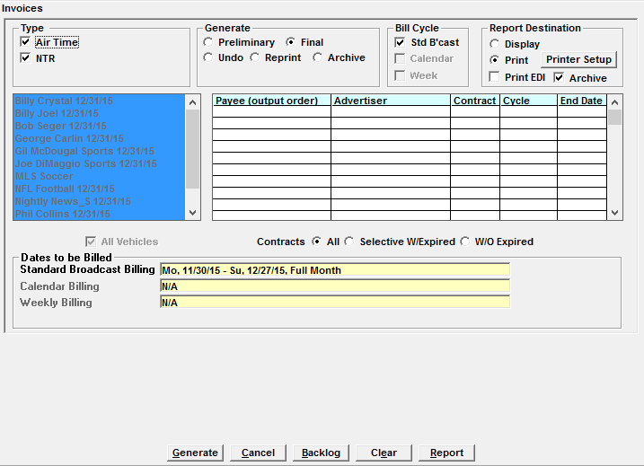
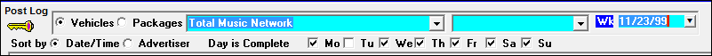
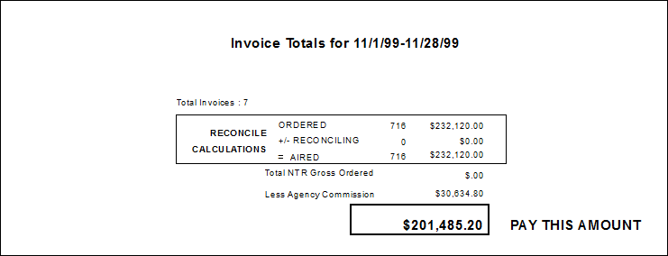
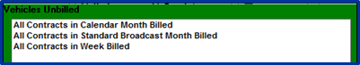
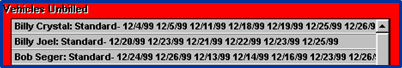
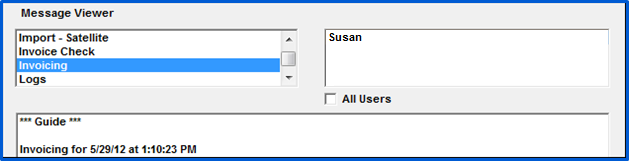
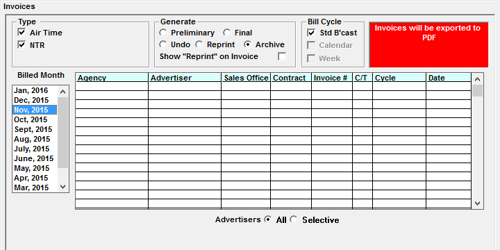

Final Invoices
Pending Orders Check
Before final invoicing can begin, you must have any completed proposals or unscheduled orders processed. They will show in a red warning box on the invoice screen if trying to start running final invoices before they’ve been resolved. (Tip: press the printer icon to print this list.)
- Completed proposals must be changed to unscheduled orders and scheduled or unapproved proposals.
- Unscheduled orders must be scheduled.
- To view any unscheduled Orders, click on the Alert button.
Final Invoice Procedure
After running the month end check programs and reviewing Preliminary Invoices, you are ready to run Final Invoices. (Note: if any user is in the Post Log Screen, you will not be able to generate Final Invoices.) This section describes how to run final invoices.

Type: Air Time (or Commercial on v8.1 and above), Gen Rep A/R, Print Rep Invoices, NTR: Select the type of Invoices you wish to generate. (For more information on Rep Invoices, see the “Rep Vehicles and Billing” help document available on the Counterpoint website.)
Generate: The available options are:
- Preliminary: preliminary invoices are used for proofing purposes and do not update receivables when run.
- Final: select the Final radio button to generate final invoices for the billing period. Final invoices update receivables and are the invoices that are sent to agencies/direct advertisers.
- Undo: this option is used to unbill previously billed invoices.
- Reprint: previously billed invoices can be reprinted using this option.
- Archive: the archive radio button can be selected to generate an invoice archive for a previously billed month as a process separate from the invoice process.
Bill Cycle: The Billing Cycle is defined in the contract header. If more than one billing cycle is used, each bill cycle is invoiced separately. Typically only the standard broadcast bill cycle is used.
Report Destination:
- Display: some users may be allowed to display final invoices in addition to printing them.
- Print: select this option to print a hard copy of the invoices.
- Print EDI: when this is checked on, any invoices for agencies using the EDI system will be included in the displayed or printed invoice run. When not checked on, the EDI invoices will be excluded from the displayed/printed invoice run (only the EDI files themselves will be created).
- Archive: this option is available for final and reprint invoices and is checked on by default. When checked on, an invoice archive will be saved automatically in PDF format in the Export folder when running final and reprint invoices. When invoices are run for all contracts, the invoice archive includes all contracts, including EDI invoices and invoices for any agencies or direct advertisers using the PDF Email feature. When this option is not checked on, the invoice archive will not be created, but can still be created separately for a previously generated invoice run using the “Archive” option from the “Generate” field.
Contracts All or Selective: Decide whether to print all or selective invoices.
- All: Will print all invoices for the billing period.
- Selective: Allows the user to choose one or several contracts. When printing preliminary or final invoices, on version 7.0 and prior versions, the two choices are “selective w/expired” (populates the contract grid with all contracts that have ordered spots that might air within the billing period, and makegood and/or outside spots airing within the billing period), and “selective w/o expired” (populates the contract grid with the contracts that might air within the billing period.) On version 7.1 and above, when pressing the Selective radio button, a question will appear that reads "Include MG/Outside spots scheduled in this billing period for previously expired Orders?". When answering Yes, the selective radio button will be labeled "Selective + MGs", and it will work the way the "Selective w/Expired" choice worked before (the list of contracts will be populated by contracts that have ordered Spots that might air within billing period and MG and/or Outside Spots airing within the billing period). When answering No, it will be labeled "Selective w/o MGs" and it will work the way the "Selective w/o expired" option worked before (populate the grid with contracts that might air within the billing period).
If a warning message is displayed that not all days have been marked as complete, run the Log Posting Status report to check for days not marked as compete. To mark a day as complete, in Post Log, select the Vehicle and date and place a checkmark in the checkbox for the day to be set as complete.

Final Invoicing and Post Log Rules
If Final Invoicing is being generated, a user will not be able to access the month being generated in Post Log. Users can access other months in Post log. If a user is in Post Log and someone tries to run Final Invoicing, they will receive a warning message and will not be able to generate Finals.
Generate Finals
Once all the invoice selections have been made, press the Generate button. When generating final invoices, a prompt will appear that reads “OK to generate final invoices and updated receivables?” Press Yes on this prompt to proceed.
Completed Invoices
Final Page Totals
The last page of invoices lists the total number of invoices created and the final totals for the invoice run.

PDF Emails
When final invoices are run, near the end of the invoice process, all the invoices for each agency/direct advertiser using the PDF email feature will be gathered together into separate PDF files - one file per agency. When the Traffic Site Options Invoice Email setting is set to “Automatic” (and the PDF email feature is activated by having the “Activate” checkbox checked on), the invoice files will be placed in the Export\PDF Email folder, and emailed as an attachment to the recipients defined on the PDF Email Invoice Personnel screen, using the email configuration information entered in Traffic Site Options on the Email tab. (If the feature is activated but not set to Automatic, the PDF invoice email files must be retrieved from the Export\PDF Email folder, and emailed manually to the agency.) A CSV log file is also placed in the Export\PDF Email folder that lists the Agency, Advertiser, Contract Number, Invoice Number, Invoice Month and Year, and Date/Time Created/Sent for each invoice. A separate log file is created in the Data\Messages folder and is named “PDFemail” with the user name and date generated. It lists the contracts/invoices emailed, the email addresses they were emailed to, and any warnings or errors experienced. Note: for systems that have separate air time and NTR invoices, it’s possible to configure the PDF email feature to only send air time invoices, or to only send NTR invoices. See the help document Traffic Site Options for more information.
On the emails that get sent, the “From Name” will use the “Client Name” from Traffic Site Options. The “Sender Address” will be the “Account Name” from Site Options. The email subject line will be the Client Name, Invoice Month and Year. The text of the email will read “Attached are invoices from [Site Options Client Name], [Month], [Year] Invoices”. A copy of the emailed invoice file will be saved in the export\PDF Email folder, with the agency name, date, and time generated as the filename.
Invoices from Agencies and Direct Advertisers set to receive the PDF Emails will not be included with the printed or displayed invoices when running final and reprint invoices as they are being automatically emailed instead. (They will be included with the invoice archive however.)
During the reprint invoice process, when PDF Emails are activated, a prompt will appear that asks whether to create/send the PDF invoice emails. When set to “Automatic”, answering yes on this prompt will automatically send the emails to the agency. When activated, but when not set to Automatic, the PDF invoice files will be created but must be emailed manually. (A CSV log file will also be created in the Export\PDF Email folder during the reprint process, with a letter “R” after the date in the filename to indicate it is a reprint invoice run.)
Important Note: for testing purposes, if the word “test” is in the “Start in” path of the test system Traffic shortcut, then PDF emails will not be sent during the final or reprint invoice process. This makes it possible to test invoices without accidentally emailing test invoices to the different agencies and direct advertisers set to use the PDF Email system.
Invoice Archive
If the “Archive” option was checked on when running final (and reprint) invoices, the PDF invoice archive will be saved in the Export folder.
The archive filename is as follows: “Archive [‘All’ if all invoices are run] [Month abbreviation], [4 digit year] Invoices [date and time generated].pdf”.
Agencies/Direct advertisers using the PDF email system and the EDI invoice system will always have their invoices included in the archive (when run for “All” contracts or for selective contracts that include those agencies/direct advertisers), in addition to the invoices for agencies and direct advertisers that do not use either system.
Invoice Results
Complete
After final invoices have completed processing, a Vehicles Unbilled box will appear. A box with a green background shows that invoices completed successfully and all contracts were billed as expected.

If any issues were encountered with the PDF Email process, they will be displayed at the bottom of the screen. For example, if an agency is set to use the PDF Email system but no email addresses are defined, a warning message will appear that reads “To address missing”. If generating invoices when not connected to the internet or when the Site Options Email screen is not configured properly, a message will appear that reads “Server address or port number incorrect”. These warning messages will not prevent the invoice process from completing. If necessary, PDF emails can be retrieved from the export\PDF Email folder and mailed manually (for example, if the email process didn’t complete normally because of not being connected to the internet or because an email address was incorrect.)
Incomplete
If invoicing did not successfully complete, you will see a red Vehicles Unbilled box and a list of the vehicles and dates with unbilled spots.

If you see this red screen and you have requested billing for the entire month, then the full invoice run did not complete. For assistance with incomplete billing, please contact support@counterpoint.net.
Invoice Error Messages
If any errors occurred during final invoicing, they can be viewed in the invoice log file. Go to Accessories -> Messages and scroll to Invoicing, then select the user name that created the invoices. If you see any errors, send the file to support@counterpoint.net.

Advance Billing for Installment Contracts
Advance billing can be performed for installment type contracts (version 7.1 and above). To use this feature, all the installment billing on a contract must be allocated to a single month, which must be either the same month that the contract starts, or prior to the start of the contract.
For example, the current billing period is January, and there’s an installment contract that is being entered with air time/NTR that starts in June and runs through July. To bill this contract in advance, allocate the installment revenue to a single month, whichever month you wish to bill it in. For example, if you wish to bill it in January, allocate all the installment revenue to January. It you wish to bill it in June, allocate all the installment revenue to June.
For more information on this feature, see the “Installment Billing” help document on the Counterpoint website.
Running the Invoice Archive Separately From Final Invoices
To create the PDF invoice archive separately from the final/reprint invoice process, on the Invoice screen, select the type of invoice to create an archive of (Air Time, NTR, etc.), select the “Archive” radio button from the “Generate” field in the center of the screen, select the month to generate the archive for, then press the Generate button. (It is also possible to create an archive for a single or selective contracts using the Selective radio button.)

The PDF archive will be stored in the Export folder.